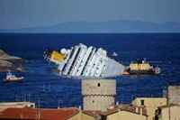

Efe @ 24-03-2012 16:31
Roma.- Ahora llegará el turno de la retirada de los restos del crucero. Se tardará de diez a doce meses, según la naviera propietaria del barco.
Las operaciones de extracción de las 2.300 toneladas de combustible que portaba el crucero 'Costa Concordia', que naufragó el 13 de enero en aguas del mar Tirreno frente a la isla italiana de Giglio, se han dado como "técnicamente" terminadas este sábado, informaron las empresas extractoras. [Así fue el naufragio]
La aspiración del carburante de los depósitos efectuada por técnicos de las compañías italiana Neri y holandesa Smit contratadas por la naviera Costa Cruceros comenzó el 12 de febrero y se ha desarrollado durante 32 días consecutivos, dentro de las cinco semanas previstas y a pesar de 10 días de condiciones adversas de mal tiempo.
Las operaciones de extracción han consistido fundamentalmente en realizar dos perforaciones: una por donde el carburante se absorbía hacia unas cisternas externas, y otra para bombear agua de mar en las bodegas que iban quedando vacías para evitar que la nave pudiera desequilibrarse.
En la labor de extracción han sido utilizadas 20 medios marinos, plataformas, remolcadores, naves para el transporte, naves puentes, naves cisternas, naves para la limpieza y la depuración del agua y un equipo de cien personas de distintas profesiones y nacionalidades.
El 'Costa Concordia' se encuentra encallado e inclinado 30 grados sobre su lado derecho, en una zona marítima de gran importancia al ser paso de cetáceos y otras especies marinas protegidas, por lo que la presencia del carburante hacía peligrar el ecosistema de la zona.
Hace dos días, cinco cadáveres fueron localizados en la parte sumergida del buque gracias al uso de los robots submarinos Rov, que los encontraron entre los intersticios del casco del buque y el fondo marino.
Con la localización de estos cinco cuerpos, las víctimas del crucero, que encalló en una formación rocosa cerca de la costa con 4.229 personas a bordo, asciende a 30 muertos y a dos desaparecidos.
En cuanto al tiempo que tomará la retirada de los restos del crucero, será de diez a doce meses, según anunció a principios de mes la naviera propietaria del barco siniestrado. Seis compañías han presentado proyectos para la retirada del crucero de las costas toscanas.
La juez del caso 'Costa Concordia' ha fijado para el 21 de julio para la próxima audiencia. El principal acusado de la catástrofe, el comandante Francesco Schettino permanece bajo arresto domiciliario.